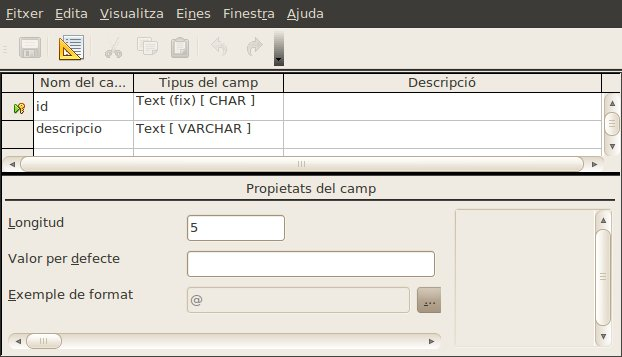

El projecte consistirà en crear una base de dades que permeti gestionar un hospital. L'hospital està compost de diferents unitats hospitalàries cada una de les quals té assignat diferents personal sanitari. Per exemple a la unitat de traumatologia se li han assignat 6 metges, 3 anestesistes, 5 fisioterapeutes, 8 infermeres i 15 auxiliars d'infermeria.
Per fer aquestes assignacions caldrà controlar l'especialitat del personal sanitari. l'Especialitat es definirà per una categoria: metge, fisioterapeuta, infermera, ... i una especialitat: trauma, medicina general, neurologia, maxil·lofacial, etc.
La base de dades gestionarà també els pacients de l'hospital, tant els que requereixin d'hospitalització com els que s'intervinguin sense ingrés. Els pacients no s'esborren mai per tal de mantenir un historial d'ingressos i intervencions.
Dels ingressos caldrà saber la data de l'ingrés i la data d'alta en cas que ja s'hagi produït, el pacient que es trobava ingressat, l'habitació i el llit on es va hospitalitzar al malalt i el temps que el metge va estimar que romandria ingressat.
Les intervencions es classifiquen per tipus. Per exemple visita, operació, radiografia, etc. Cada intervenció ha de tenir un metge responsable que és qui l'ha decidit. Ara bé, a banda del metge responsable, hi podran intervenir altre personal sanitari com fisioterapeutes, infermeres, altres metges, anestesistes, radiòlegs, etc. Es necessita saber qui són tots el que actuïn en una intervenció.
En aquesta part del projecte modificarem les taules per tal d'assegurar una total compatibilitat amb el projectes futurs. SI durant la modificació obtens erros, elimina, abans de fer les modificacions demanades, totes les dades que vas introduir en el projecte passat.
1.- Obriu el projecte hospital que vàreu començar en el projecte anterior. Assegureu que tingueu les següents taules creades i que el nom coincideixi totalment.
2.- Assegureu-vos també que totes les taules tinguin clau primaria seguint aquestes indicacions:
3.- Seguidament assegureu-vos que les taules tinguin els camps que es mostren a continuació:
Pacients:
PersonalSanitari:
UnitatsHospitalaries:
EspecialitatsSanitaries:
Ingressos:
TipusIntervencions:

Intervencions:
IntervencionsPersonalSanitari:
4.- Modifiqueu les mides del textos per tal de no malbarartar espai.
5.- Configureu els formats numèrics i les dates
6.- Documenteu els camps de les taules per tal que siguin fàcilement interpretables.
Un cop modificades les taules, haureu d'importar les dades que es troben a:
Cal que abans de començar el mòdul següent lliuris el document de base de dades am el que hagis treballat a la bústia del moodle oberta per a l'entrega de la segona part de projecte (Projecte II),

|
|

|
|